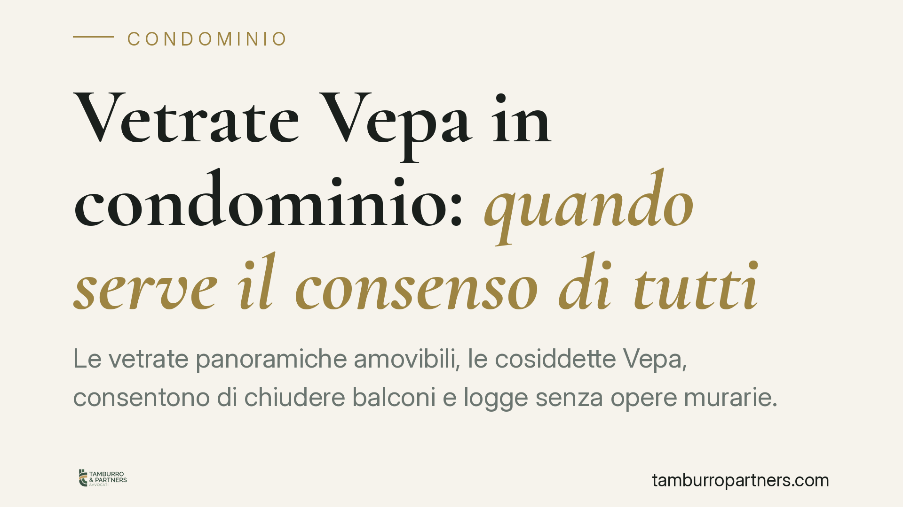

Vetrate Vepa in condominio: quando serve il consenso di tutti
Le vetrate panoramiche amovibili, le cosiddette Vepa, consentono di chiudere balconi e logge senza opere murarie. Rientrano nell'edilizia libera, ma questo non basta a metterle al riparo da contestazioni condominiali. Due recenti pronunce della Cassazione chiariscono quando l'installazione richiede l'unanimità dei condòmini. Un tema concreto per chi vive in condominio e per chi lo amministra.

Il caso e perché conta
Le vetrate panoramiche amovibili (Vepa) sono sistemi di chiusura in vetro, privi di telaio fisso e facilmente rimovibili, utilizzati per proteggere balconi, logge e porticati senza creare nuova volumetria. Dal punto di vista edilizio-urbanistico sono qualificate come interventi di edilizia libera: non servono permesso di costruire né SCIA.
Questa qualificazione, però, riguarda il rapporto con il Comune. Non esaurisce la questione sul piano condominiale. Con le ordinanze n. 12919/2025 e n. 12854/2025 la Corte di Cassazione ha ribadito che un intervento legittimo sotto il profilo urbanistico può comunque essere illegittimo nei rapporti tra condòmini.
Inquadramento normativo
Il punto di equilibrio sta in tre norme del codice civile.
L'art. 1122 cod. civ. consente al singolo condòmino di intervenire sulle parti di proprietà esclusiva, purché non arrechi danno alle parti comuni né pregiudichi stabilità, sicurezza e decoro architettonico dell'edificio. Il balcone è in genere di proprietà esclusiva, ma il suo aspetto esterno incide sulla facciata, che è parte comune.
L'art. 1120 cod. civ. disciplina le innovazioni sulle parti comuni, con le relative maggioranze. L'art. 1138 cod. civ. riguarda invece il regolamento condominiale. Qui occorre una distinzione decisiva: il regolamento assembleare vincola con le maggioranze di legge, mentre il regolamento contrattuale - sottoscritto da tutti i condòmini o accettato all'atto di acquisto - può imporre limiti più stringenti alle proprietà esclusive. Tra questi, il divieto di modificare l'estetica della facciata.
Le due condizioni che fanno scattare l'unanimità
Dalla lettura delle pronunce emergono due situazioni in cui l'installazione delle Vepa non è libera.
Primo caso: il regolamento contrattuale. Se il regolamento vieta espressamente chiusure, verande o modifiche dell'aspetto dei balconi, quel vincolo prevale. Per derogarvi serve il consenso di tutti i condòmini, perché si incide su una pattuizione di natura contrattuale che nessuna maggioranza assembleare può superare.
Secondo caso: il decoro architettonico. Anche in assenza di divieto espresso, l'installazione non deve alterare l'armonia estetica dell'edificio. Se la vetrata modifica in modo apprezzabile la fisionomia della facciata - per materiali, colori, estensione o visibilità - il singolo non può procedere senza il consenso degli altri. La valutazione è di fatto: conta l'incidenza concreta sull'aspetto dell'immobile, non l'intenzione di chi installa.
Implicazioni pratiche
Per il condòmino che vuole installare la Vepa, la qualificazione come edilizia libera è solo il primo tassello. Prima di procedere va verificato il titolo che regola la vita del condominio e va considerato l'impatto estetico dell'opera. Un'installazione avviata senza queste verifiche espone al rischio di un'azione per la rimozione, con i relativi costi.
Per l'amministratore, il tema richiede attenzione preventiva. Segnalare per tempo i vincoli regolamentari evita contenziosi e tutela il condominio. In presenza di installazioni già realizzate, occorre valutare caso per caso se vi sia lesione del decoro o violazione del regolamento prima di promuovere iniziative.
Per l'assemblea, è utile ricordare che una delibera a maggioranza non sana la violazione di un regolamento contrattuale: su quel piano la maggioranza non ha potere.
Cosa fare in concreto
- Reperite il regolamento condominiale e verificate se è di natura contrattuale e se contiene divieti su chiusure, verande o modifiche dei balconi.
- Valutate l'impatto estetico della vetrata sulla facciata: materiali, colore ed estensione devono armonizzarsi con l'edificio.
- Informate preventivamente l'amministratore e, nei casi dubbi, portate la questione in assemblea prima di installare.
- Acquisite il consenso di tutti i condòmini quando esiste un vincolo contrattuale o quando l'intervento incide sul decoro architettonico.
- Documentate autorizzazioni e caratteristiche tecniche dell'opera, a tutela della vostra posizione in caso di contestazione.
La regola di fondo è semplice: edilizia libera non significa libertà condominiale. Un controllo a monte evita la rimozione a valle.
---
*Contributo informativo a cura di Tamburro & Partners - Avv. Giuseppe Tamburro. Non costituisce parere legale.*
Ogni condominio ha una storia a sé.
Se gestisci un'amministrazione e vuoi un confronto su una specifica questione condominiale, scrivi allo studio. Ti rispondiamo entro un giorno lavorativo.